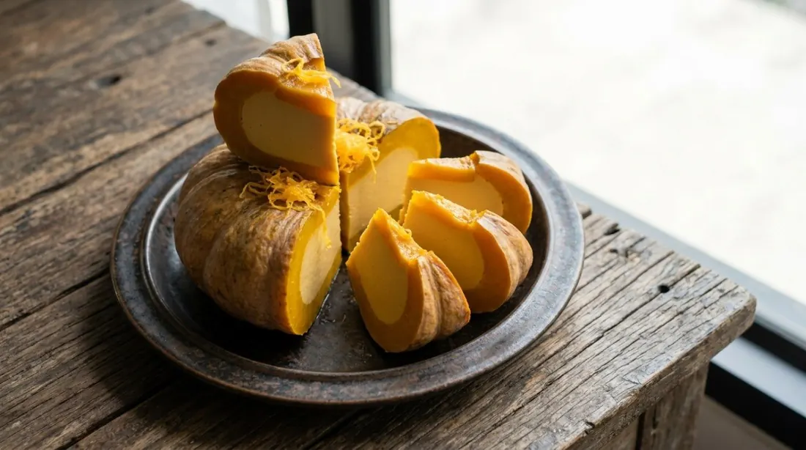

Palm-sugar coconut custard steamed inside a whole pumpkin, sliced into wedges at the table — the dessert that arrives looking like a cake.

สังขยาฟักทอง is the most theatrical of the Thai custards: the pumpkin is the dish and the custard is the filling. You carve the lid, scoop the seeds, and steam the whole thing until the pumpkin's flesh and the custard inside set together — then it's cut into wedges like a pie, orange pumpkin rimming each slice of golden custard.
The custard itself is built by hand, literally. Every source uses the same technique — ขยำ, squeezing the eggs, palm sugar and pandan leaves together in a bowl until the sugar dissolves against the egg. Kapook's recipe is explicit that the pandan leaf is the tool: you knead with it, and it perfumes the custard as it works. Then the coconut milk goes in, everything is strained once, and the mixture rests before it's poured into the pumpkin.
The steaming is where patience lives. Wongnai's family recipe steams a 1.2 kg pumpkin for an hour and twenty minutes on low heat, and — the trick — opens the lid every 15 minutes to vent the steam, because a sealed steamer cracks the pumpkin's skin. It's cooled completely before the knife touches it, for the same reason. The finishing touch is ฝอยทอง, golden egg threads, scattered over the top like the dessert's crown.
| Thai | English | Amount |
|---|---|---|
| ฟักทอง | Pumpkin | 1 (~1.2 kg) |
| ไข่เป็ด / ไข่ไก่ | Duck eggs / chicken eggs | 3 / 3 |
| น้ำตาลปี๊บ | Palm sugar | 300 g |
| เกลือ | Salt | ½ tsp |
| กะทิ | Coconut milk | 250 g |
| ใบเตย | Pandan leaves | 3 |
| ฝอยทอง | Golden egg threads | 1 cup, to serve |
Smaller versions: Cookpad's palm-sized pumpkin takes 2 chicken + 1 duck egg, 3 tbsp palm sugar + 2 tbsp white, 125 ml coconut milk. Kapook's bowl version: 3 duck eggs, 4 palm-sugar blocks, half a can of coconut milk, 3–4 pandan leaves.
The egg mix. Wongnai splits duck and chicken eggs 3+3 for the richest middle ground; Cookpad goes 2 chicken + 1 duck for a palm-sized pumpkin; Kapook's bowl version is all duck; a Lemon8 recipe uses nine eggs in a big pumpkin. Duck eggs give the custard its dense, almost chewy set — chicken eggs make it softer.
The sweetener. Palm sugar alone (Wongnai, Kapook) or palm plus white (Cookpad, "adjust to taste"). Palm sugar is the flavour of the dish — the white sugar only adjusts sweetness without changing it.
Steam heat and time. Wongnai: low, 1 hr 20 min. Kapook: HIGH, ~45 min. Cookpad: medium. The lower and slower, the less likely the pumpkin cracks and the smoother the set — but the sources all agree the time follows the size of the pumpkin and the dish.
The vents. Wongnai vents the lid every 15 minutes; Kapook vents "periodically" — both to stop the pumpkin bursting. It's the detail every source mentions because everyone has cracked a pumpkin once.
The crown. Only Wongnai tops the finished custard with ฝอยทอง (golden egg threads). The others serve it plain. The threads turn it into the celebration version.
This recipe is translated from the following Thai-language sources. Where they disagree, we've said so.
1. Wongnai — "สูตร สังขยาฟักทอง" by ImAiw (the recipe used here: 3+3 eggs, 15-minute vents, foy thong crown) — wongnai.com
2. Cookpad — "สังขยาฟักทอง (สำหรับลูกเล็ก)" by WaterS (palm-sized version, two sugars, mum's bubble tip) — cookpad.com
3. Kapook — "6 วิธีทำสังขยา สูตรขนมไทยเมนูไข่" (the squeeze-with-pandan technique, high-heat method) — cooking.kapook.com
4. Lemon8 — "วิธีทำสังขยาฟักทองแบบไทยๆ นึ่ง 30–45 นาที" (the nine-egg version) — lemon8-app.com